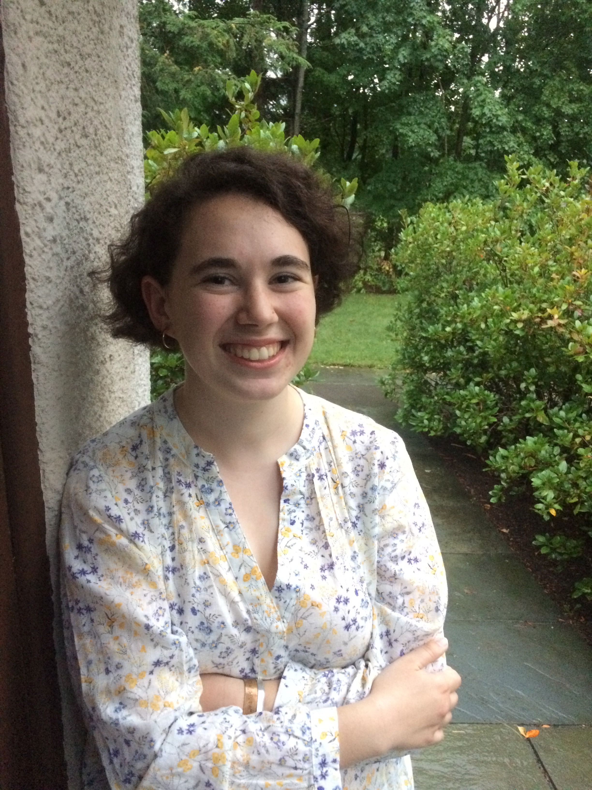

Hello! Hej! Bonjour!
I'm a Junior at Wellesley College where I study Computer Science, Statistics, and French.
I'm interested in anything and everything related to data: how we obtain it, process it, and contextualize it. I'm particularly enthralled by those applications with significant sociopolitical implications. To see what I'm currently up to, please go to the "CS" tab.
Besides programming, I spend my time hiking, building my photography portfolio, and admiring the work of Hilma af Klint.
My email is arothsch [at] wellesley [dot] edu.